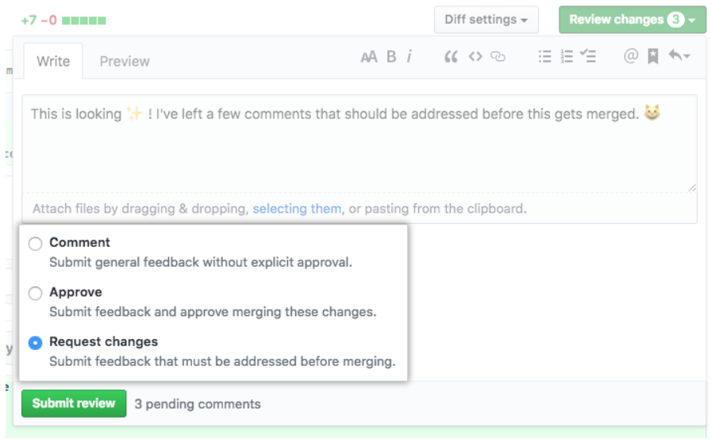

풀 리퀘스트 날리기
내 브랜치에서 작업한 커밋들을
main브랜치에 합쳐서 다른 사람들에게도 보이도록 하고 싶을 때 풀 리퀘스트(PR)을 날린다.
공동으로 작업할 때, 내 브랜치를 직접
main브랜치에git merge해서git push하는 것은 권장되지 않는다.
-
내 브랜치에서 만든 모든 변경사항을 원격 레포지토리에 업로드
- 로컬 변경 사항을 원격 저장소에 푸시하기까지의 과정을 수행한 상태이면 된다.
-
GitHub에 접속하여 작업 중인 레포지토리로 이동
-
아래 사진처럼 "Pull requests" 탭으로 이동
-
초록색 "New pull request" 버튼 클릭
-
아래 사진처럼 base 브랜치를
main으로, compare 브랜치를 내 브랜치 이름(머지할 브랜치)으로 설정 -
위 사진처럼 "Able to merge." 메시지가 뜨면, 아래에 출력되는 변경사항들을 확인한 다음 초록색 "Create pull request" 버튼 클릭
- 머지 컨플릭트가 있어서 머지할 수 없다는 메시지가 뜨면, 두 가지 방법으로 해결할 수 있다.
- 내 로컬 작업 환경의 내 브랜치에서
git pull origin main을 한 다음, 머지 컨플릭트 해결법을 수행하고, 다시git push하여 풀 리퀘스트를 날리는 방법 - GitHub의 "Resolve conflicts" 기능을 활용하는 방법: 여기 참조
- 내 로컬 작업 환경의 내 브랜치에서
- 머지 컨플릭트가 있어서 머지할 수 없다는 메시지가 뜨면, 두 가지 방법으로 해결할 수 있다.
-
아래 사진처럼 적당히 제목과 글을 작성하고 초록색 "Create pull request" 클릭

- 다른 사람이 글을 읽었을 때 어떤 변경사항이 있는지 한눈에 알기 쉽도록 적는 것이 좋다.
- 필요하다면 오른쪽에서 "Reviewers"나 "Assignees"를 설정하여 특정 사람에게 리뷰해달라고 지목할 수도 있다.
-
풀 리퀘스트를 올렸다는 사실을 협업하는 사람들에게 알리고, 그들에게 리뷰 및 승인해달라고 한다.

- 풀 리퀘스트를 올린 본인이 다른 사람들의 리뷰 없이 "Merge pull request" 버튼을 누르는 것은 권장되지 않는다.
-
다른 사람들은 "Files changed" 탭으로 들어가서 해당 풀 리퀘스트의 파일 별 변경사항을 확인하고 리뷰를 남긴 다음 승인을 해야 한다.

- 위 사진처럼 각 파일의 특정 줄(여러 줄도 드래그로 지정 가능)에 커서를 대면 파란색 "+" 버튼이 나타난다. 이 "+"를 누르면 해당 코드에 대한 리뷰를 작성할 수 있다.
- 위 사진의 오른쪽 위에 있는 초록색 "Review changes"를 선택하면, 아래 사진처럼 세 가지 상태 중 하나로 전체적인 리뷰를 작성할 수 있다.
- 
- (사진 출처)
- Comment: 명시적 승인 없이 일반적인 코멘트를 남기는 상태
- Approval: 이 풀 리퀘스트의 변경사항을 머지해도 된다고 승인하면서 코멘트를 남기는 상태
- Request changes: 머지 전에 꼭 고쳐야 할 사항이 있으므로 고쳐달라고 코멘트를 남기는 상태
- 풀 리퀘스트를 올린 사람은 본인의 풀 리퀘스트를 승인할 수 없다.
- 승인을 n명 이상에게 받아야만 머지가 가능하도록 레포지토리에 설정해 둘 수 있는 기능도 존재한다.
- 심화 과정이지만, 관심이 있다면 브랜치 보호하기를 참조하기 바란다.
-
다른 사람들의 승인을 받았고 이 풀 리퀘스트가
main브랜치에 반영되어도 문제가 없다고 확인하면 "Merge pull request" 버튼을 누를 수 있다.